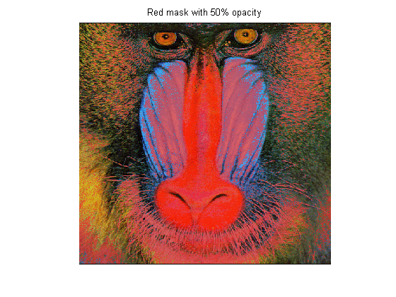

Example: flattenMaskOverlay
This function creates a flattened image with overlayed mask (with transparency). The mask is applied with a specified color and transparency over the original image, and the resulting image is flattened to a new image.
By Jiro Doke. Created Nov 2011.
Contents
Syntax and Description
flattenMaskOverlay(img, mask) applies a mask (defined as logical) on top of the original img and displays the result in the current axes. The mask (locations of 1's) will be displayed as a red color with 50% opacity. The resulting image will be a flat image (no use of AlphaData), and therefore will have better interactive performance (zooming, panning, data cursors). img must be MxN (gray scale) or MxNx3 (RGB). Supported data types are double, uint8, uint16. mask must be an MxN logical array.
flattenMaskOverlay(img, mask, alphaLevel, overlayColor) specifies the opacity level and the overlay color of the mask. alphaLevel must be a scalar between 0 to 1. Pass in [] for default (0.5). overlayColor can be a string indicating the color (see list below) or a 1x3 double array (0 to 1) representing the RGB values. Default is red. b blue g green r red c cyan m magenta y yellow k black w white
im = flattenMaskOverlay(img, mask, ...) returns the image data without displaying the image.
Example
Load image of Mandrill and convert indexed image to RGB. rgb is a double precision true color.
load mandrill rgb = ind2rgb(X, map); whos rgb
Name Size Bytes Class Attributes rgb 480x500x3 5760000 double
Display original image.
image(rgb); axis image off; title('Original image');
Create a mask that corresponds to pixels with each color value greater than 0.3. Display the image in black and white.
mask = rgb(:, :, 1) > 0.3 & rgb(:, :, 2) > 0.3 & rgb(:, :, 3) > 0.3; image(mask); colormap(gray(2)); axis image off; title('Mask image');
Overlay with a red mask and 50% opacity (default).
flattenMaskOverlay(rgb, mask);
title('Red mask with 50% opacity');
 Overlay with a green mask and 100% opacity.
flattenMaskOverlay(rgb, mask, 1, 'g'); title('Green mask with 100% opacity');
Get the flattened image data. newIm is the same size and data type as the original image.
newIm = flattenMaskOverlay(rgb, mask, .6, [1, 1, .5]); image(newIm); axis image off; whos newIm
Name Size Bytes Class Attributes newIm 480x500x3 5760000 double